기계설계기사 (2016-05-08 기출문제)
1과목: 재료역학
1. 그림과 같이 하중을 받는 보에서 전단력의 최대값은 약 몇 kN 인가?
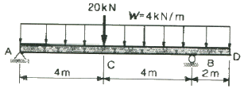
- 11 kN
- 25 kN
- 27 kN
- 35 kN
(정답률: 42%)

2. 지름이 동일한 봉에 위 그림과 같이 하중이 작용할 때 단면에 발생하는 축 하중 선도는 아래 그림과 같다. 단면 C에 작용하는 하중(F)는 얼마인가?
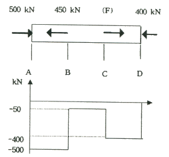
- 150
- 250
- 350
- 450
(정답률: 87%)
3. 길이가 L이고 지름이 d0인 원통형의 나사를 끼워 넣을 때 나사의 단위 길이 당 t0의 토크가 필요하다. 나사 재질의 전단탄성계수가 G일 때 나사 끝단 간의 비틀림 회전량(rad)은 얼마인가?
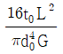
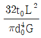
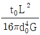
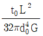
(정답률: 36%)
4. 지름이 d인 짧은 환봉의 축 중심으로부터 a만큼 떨어진 지점에 편심압축하중이 P가 작용할 때 단면상에서 인장응력이 일어나지 않는 a 범위는?
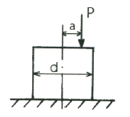
 이내
이내 이내
이내 이내
이내 이내
이내
(정답률: 67%)
5. 그림과 같이 단붙이 원형축(Stepped Circular Shaft)의 풀리에 토크가 작용하여 평형상태에 있다. 이 축에 발생하는 최대 전단응력은 몇 MPa 인가?
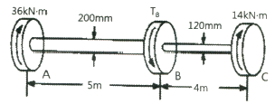
- 18.2
- 22.9
- 41.3
- 147.4
(정답률: 43%)
6. 그림과 같이 순수 전단을 받는 요소에서 발생하는 전단응력 τ=70MPa, 재료의 세로탄성계수는 200GPa, 포아송의 비는 0.25 일 때 전단 변형률은 약 몇 rad 인가?
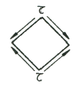
- 8.75 × 10-4
- 8.75 × 10-3
- 4.38 × 10-4
- 4.38 × 10-3
(정답률: 67%)
7. 전단력 10kN이 작용하는 지름 10cm인 원형단면의 보에서 그 중립축 위에 발생하는 최대 전단응력은 약 몇 MPa 인가?
- 1.3
- 1.7
- 130
- 170
(정답률: 53%)
8. 두께 1.0mm의 강판에 한 변의 길이가 25mm 인 정사각형 구멍을 펀칭하려고 한다. 이 강판의 전단 파괴응력이 250 MPa 일 때 필요한 압축력은 몇 kN 인가?
- 6.25
- 12.5
- 25.0
- 156.2
(정답률: 24%)
9. 지름 35cm의 차축이 0.2°만큼 비틀렸다. 이때 최대 전단응력이 49MPa이고, 재료의 전단 탄성계수가 80 GPa 이라고 하면 이 차축의 길이는 약 몇 m 인가?
- 2.0
- 2.5
- 1.5
- 1.0
(정답률: 32%)
10. 정육면체 형상의 짧은 기둥에 그림과 같이 측면에 홈이 파여져 있다. 도심에 작용하는 하중 P로 인하여 단면 m-n 에 발생하는 최대 압축응력은 홈이 없을 때 압축응력의 몇 배 인가?
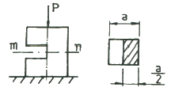
- 2
- 4
- 8
- 12
(정답률: 60%)
11. 그림과 같은 단순 지지보의 중앙에 집중하중 P가 작용할 때 단면이 (가)일 경우의 처짐 y1은 단면이 (나)일 경우의 처짐 y2의 몇 배인가? (단, 보의 전체 길이 및 보의 굽힘 강성은 일정하며 자중은 무시한다.)
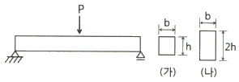
- 4
- 8
- 16
- 32
(정답률: 72%)
12. 그림과 같은 일단 고정 타단 롤러로 지지된 등분포하중을 받는 부정정보의 B단에서 반력은 얼마인가?
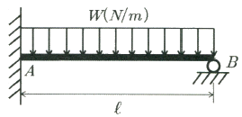
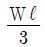
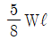
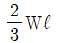
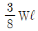
(정답률: 55%)
13. 그림과 같이 벽돌을 쌓아 올릴 때 최하단 벽돌의 안전계수를 20으로 하면 벽돌의 높이 h를 얼마만큼 높이 쌓을 수 있는가? (단, 벽돌의 비중량은 16kN/m3, 파괴 압축응력을 11 MPa 로 한다.)
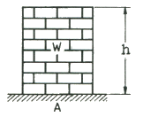
- 34.3 m
- 25.5 m
- 45.0 m
- 23.8 m
(정답률: 75%)
14. 그림의 구조물이 수직하중 2P를 받을 때 구조물 속에 저장되는 탄성변형에너지는? (단, 단면적 A, 탄성계수 E는 모두 같다.)
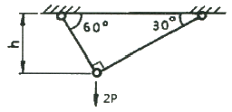
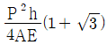
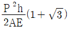
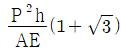
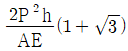
(정답률: 40%)
15. 그림과 같이 균일분포 하중 w를 받는 보에서 굽힘 모멘트 선도는?
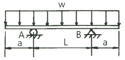
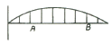
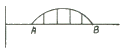
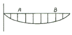
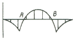
(정답률: 78%)
16. 바깥지름 30cm, 안지름 10cm인 중공 원형 단면의 단면계수는 약 몇 cm3 인가?
- 2618
- 3927
- 6584
- 1309
(정답률: 63%)
17. 일단 고정 타단 롤러 지지된 부정정보의 중앙에 집중하중 P를 받고 있을 때, 롤러 지지점의 반력은 얼마인가?
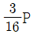
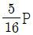
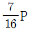
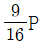
(정답률: 62%)
18. 평면 응력상태에서 σx와 σy 만이 작용하는 2축 응력에서 모어원의 반지름이 되는 것은? (단, σx ＞ σy 이다.)
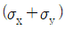
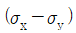
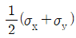
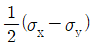
(정답률: 73%)
19. 강재의 인장시험 후 얻어진 응력-변형률 선도로부터 구할 수 없는 것은?
- 안전계수
- 탄성계수
- 인장강도
- 비례한도
(정답률: 70%)
20. 지름 100mm의 양단 지지보의 중앙에 2kN의 집중하중이 작용할 때 보 속의 최대굽힘응력이 16MPa 일 경우 보의 길이는 약 몇 m 인가?
- 1.51
- 3.14
- 4.22
- 5.86
(정답률: 63%)
2과목: 기계제작법
21. 플라즈마 젯 가공의 특징으로 틀린 것은?
- 플라즈마 젯 절단은 수중에서도 할 수 있다.
- 플라즈마 젯 절단은 절단폭이 좁고, 절단면이 곱다.
- 플라즈마 젯은 절삭가공도 가능하며 절삭성이 좋은 재료에만 응용된다.
- 플라즈마 젯은 스테인리스강, 알루미늄, 콘크리트, 내화벽돌 등을 고속으로 절단할 수 있다.
(정답률: 58%)
22. 주물의 결함 중 기공(blow hole)의 방지대책으로 가장 거리가 먼 것은?
- 주형 내의 수분을 적게 할 것
- 주형의 통기성을 향상시킬 것
- 용탕에 가스함유량을 높게 할 것
- 쇳물의 주입온도를 필요이상으로 높게 하지 말 것
(정답률: 70%)
23. 선반가공에서 구성인선(built-up edge)의 방지대책으로 적절하지 않은 것은?
- 절삭 깊이를 크게 한다.
- 절삭 속도를 빠르게 한다.
- 바이트 윗면 경사각을 크게 한다.
- 윤활성이 좋은 절삭유를 사용한다.
(정답률: 87%)
24. 프레스가공에서 딥 드로잉(deep drawing)으로 제품(용기)의 높이가 40mm, 용기 밑부분의 지름이 30mm인 제품을 가공하려고 할 때 필요한 소재의 지름은 약 몇 mm 이어야 하는가? (단, 제품과 소재의 두께는 고려하지 않는다.)
- 55
- 65
- 75
- 85
(정답률: 58%)
25. 바이트의 전방 여유각에 대한 설명으로 옳은 것은?
- 절삭 칩 제거를 용이하게 한다.
- 바이트와 가공물간에 마찰을 적게 한다.
- 설치각(setting angle)와 같은 효과를 나타낸다.
- 여유각이 클수록 날 끝이 잘 부러지지 않는다.
(정답률: 39%)
26. 래핑(lapping)가공의 특징으로 틀린 것은?
- 기하학적 정밀도가 높은 제품을 만들 수 있다.
- 미끄럼면이 원활하게 되고 마찰계수가 높아진다.
- 제품을 사용할 때 남아있는 랩제에 의하여 마모를 촉진시킨다.
- 비산하는 랩제가 다른 기계나 제품에 부착하면 마모시키는 원인이 된다.
(정답률: 50%)
27. 길이가 긴 게이지 블록에서 굽힘이 발생할 경우에도 양 단면이 항상 평행을 유지하기 위한 지지점인 에어리 점(Airy Point)의 위치는? (단, L은 게이지 블록의 길이이다.)
- 0.2113 L
- 0.2203 L
- 0.2232 L
- 0.2386 L
(정답률: 39%)
28. 밀링가공에서 플레인 커터를 고정시키기 위해 사용하는 공구는?
- 아버(arbor)
- 돌리개
- 맨드릴
- 센터드릴
(정답률: 71%)
29. 다음 중 슈퍼 피니싱 유닛을 설치하여 사용하기 가장 적합한 공작기계는?
- 선반
- 셰이퍼
- 슬로터
- 플레이너
(정답률: 43%)
30. 절삭가공에서 공구를 교환하기 위한 공구수명의 판정기준과 가장 거리가 먼 것은?
- 공구 인선의 마모가 없을 때
- 절삭저항의 변화가 급격히 증가될 때
- 완성 가공물의 치수변화가 일정량에 달할 때
- 가공면에 광택이 있는 색조 또는 반점이 생길 때
(정답률: 48%)
31. 전기저항용접과 관계되는 법칙은?
- 줄(Joule)의 법칙
- 뉴턴의 법칙
- 암페어의 법칙
- 플레밍의 법칙
(정답률: 71%)
32. 프레스기계에서 두께 5mm인 연강판에 지름을 30mm로 펀칭하려고 한다. 슬라이드 평균속도를 5m/min, 기계효율을 72%라 한다면 소요 동력은 약 몇 kW인가? (단, 판의 전단 저항은 245 N/mm2 이다.)
- 11.62
- 13.35
- 16.54
- 17.27
(정답률: 67%)
33. 머시닝센터(Machining Center)에서 이송기능(F)과 함께 사용하는 준비기능으로 옳은 것은?
- G01
- G03
- G17
- G95
(정답률: 53%)
34. 주형에 용탕을 주입할 때 걸리는 시간인 주입시간에 대한 실험식으로 옳은 것은? (단, T는 주입시간(s), W는 주물의 중량(kg), S는 주물의 살두께에 따른 상수이다.)
- T = SW
- T = S√W
- T = W√S
- T = W/S
(정답률: 65%)
35. 방전가공(Electro Discharge Machining)에서 전극재료의 구비조건으로 적절하지 않은 것은?
- 기계가공이 쉬울 것
- 가공 속도가 빠를 것
- 전극소모량이 많을 것
- 가공 정밀도가 높을 것
(정답률: 82%)
36. 연삭 작업에서 연삭숫돌의 파괴원인으로 볼 수 없는 것은?
- 균열이 있는 숫돌차를 사용할 때
- 고정 시 플랜지를 너무 세게 조였을 때
- 회전수가 규정 이상으로 고속일 때
- 연삭숫돌의 옆에 붙은 종이를 떼지 않았을 때
(정답률: 77%)
37. 표면경화법인 액체 침탄법에서 액체 침탄질화제의 주성분은?
- C2H6
- NaCN
- BaCO3
- Na2CO3
(정답률: 79%)
38. 드릴(drill) 가공 후 구멍의 정확한 진원가공과 구멍내면의 표면 거칠기를 우수하게 하기 위한 가공은?
- 리밍(reaming)
- 스폿 페이싱(spot facing)
- 카운터 보링(counter boring)
- 카운터 싱킹(counter sinking)
(정답률: 69%)
39. 각도측정기인 사인바에 대한 설명 중 틀린 것은?
- 호칭치수는 양 롤러 간의 중심거리로 나타낸다.
- 45°를 초과하여 측정할 때, 오차가 급격히 커진다.
- 사인바는 삼각함수를 이용하여 각도 측정을 한다.
- 하이트 게이지와 함께 사용해 오차를 보정할 수 있다.
(정답률: 50%)
40. 열처리에서 심냉 처리(sub-zero treatment)에 관한 설명으로 옳은 것은?
- 처음 기름으로 냉각 후 계속하여 물속에 담그고 냉각하는 것
- 강철을 담금질하기 전 표면에 붙은 불순물을 화학적으로 제거하는 것
- 담금질 직후 바로 뜨임하기 전에 일정시간 동안 약 450℃ 부근에서 뜨임하는 것
- 담금질한 제품을 0℃ 이하의 온도까지 냉각시켜 잔류 오스테나이트를 마르텐사이트화 시키는 것
(정답률: 58%)
3과목: 기계설계 및 기계재료
41. 19.6kN의 하중을 나사잭으로 들어올리기 위하여 나사잭을 작동시키기 위한 토크를 구하고자 한다. 나사의 유효지름은 41mm, 피치는 8mm, 나사 접촉부의 유효마찰계수(effective coefficient of friction)는 0.13 이라고 할 때 필요한 토크는 약 몇 N·m 인가? (단, 와셔 접촉면 마찰의 영향은 무시한다.)
- 77.82
- 84.55
- 90.41
- 98.88
(정답률: 37%)
42. 그림과 같은 블록 브레이크가 제동할 수 있는 토크는 약 몇 N·m 인가? (단, a는 500mm, b는 100mm, D는 200mm 이며, 레버를 누르는 힘(P)는 250N, 접촉부 마찰계수는 0.2 이다.)
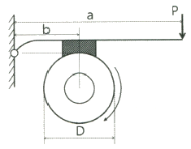
- 500
- 250
- 100
- 25
(정답률: 35%)
43. 평행한 두 축 사이의 거리가 약간 떨어진 경우 사용되는 커플링으로 두 축 사이에 중간 원판을 끼워서 동력전달을 하게 되며, 윤활문제와 원심력 때문에 고속회전에는 부적당한 커플링은?
- 플렉시블(flexible) 커플링
- 셀러(seller) 커플링
- 올덤(oldham) 커플링
- 유니버설(universal) 커플링
(정답률: 65%)
44. 표준 인벌류트 기어에서 물림률(contact ratio)이란?
- 접촉각을 물림 길이로 나눈 값
- 접촉각을 원주 피치로 나눈 값
- 물림 길이를 법선 피치로 나눈 값
- 원주 피치를 물림 길이로 나눈 값
(정답률: 62%)
45. 온도변화에 따른 관의 열응력 발생이 우려될 때는 이를 흡수하기 위한 신축 관이음을 사용하게 되는데 다음 중 신축 관이음에 속하지 않는 것은?
- 플랜지(flange) 이음
- 주름관 이음
- 미끄럼 이음
- 시웰(siwel) 이음
(정답률: 75%)
46. 강판의 두께 16mm, 리벳 구멍의 지름 18mm, 리벳의 피치 68mm인 1줄 리벳 겹치기 이음에서 1 피치마다 16kN의 하중에 작용할 때, 판의 효율은 약 얼마인가?
- 74%
- 81%
- 66%
- 59%
(정답률: 34%)
47. 지름 70mm, 길이 85mm의 저널 베어링을 400rpm으로 회전하는 전동축에 사용했을 때 약 몇 kN의 베어링 하중을 지지할 수 있는가? (단, 압력속도계수 pv = 1 N/mm2·m/s 이다.)
- 1.53
- 2.⑤
- 3.24
- 4.06
(정답률: 7%)
48. 홈 마찰자에서 홈의 각도가 2α이고 접촉부 마찰계수가 μ일 때 등가마찰계수(혹은 상당마찰계수)를 나타내는 식은?
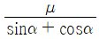
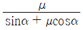
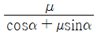
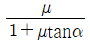
(정답률: 50%)
49. 지름이 d인 전동축에 묻힘키를 사용하여 키의 전단 저항으로 토크를 전달하고자 할 때 키의 폭 b는? (단, 키와 축에서 발생한 전단응력은 같다고 하고 키의 길이는 축 지름의 1.5배로 한다.)
- b = πd / 4
- b = πd / 6
- b = πd / 8
- b = πd / 12
(정답률: 40%)
50. 공기 스프링에 대한 일반적인 특징 설명으로 옳지 않은 것은?
- 하중과 변형의 관계가 비선형적이다.
- 측면 하중에 대한 강성이 강하다.
- 공기의 압축성에 따른 감쇠 특성이 있어서 미소 진동의 흡수가 가능하다.
- 공기 탱크 등의 부대 장치가 필요하여 구조가 복잡하고 제작비가 비싸다.
(정답률: 57%)
51. 강의 열처리 방법 중 표면경화법에 해당하는 것은?
- 마퀜칭
- 오스포밍
- 침탄질화법
- 오스템퍼링
(정답률: 87%)
52. C와 Si의 함량에 따른 주철의 조직을 나타낸 조직 분포도는?
- Gueiner, Klingenstein 조직도
- 마우러(Maurer) 조직도
- Re-C 복평형 상태도
- Guilet 조직도
(정답률: 85%)
53. 고 망간강에 관한 설명으로 틀린 것은?
- 오스테나이트 조직을 갖는다.
- 광석·암석의 파쇄기의 부품 등에 사용된다.
- 열처리에 수인법(water toughening)이 이용된다.
- 열전도성이 좋고 팽창계수가 작아 열변형을 일으키지 않는다.
(정답률: 37%)
54. 서브제로(sub-Zero)처리 관한 설명으로 틀린 것은?
- 마모성 및 피로성이 향상된다.
- 잔류오스테나이트를 마텐자이트화 한다.
- 담금질을 한 강의 조직이 안정화 된다.
- 시효변화가 적으며 부품의 치수 및 형상이 안정된다.
(정답률: 알수없음)
55. 강의 5대 원소만을 나열한 것은?
- Fe, C, Ni, Si, Au
- Ag, C, Si, Co, P
- C, Si, Mn, P, S
- Ni, C, Si, Cu, S
(정답률: 84%)
56. 다음 중 비중이 가장 큰 금속은?
- Fe
- Al
- Pb
- Cu
(정답률: 83%)
57. 과공석강의 탄소함유량(%)으로 옳은 것은?
- 약 0.01 ~ 0.02%
- 약 0.02 ~ 0.80%
- 약 0.80 ~ 2.0%
- 약 2.0 ~ 4.3%
(정답률: 72%)
58. 두랄루민의 합금 조성으로 옳은 것은?
- Al – Cu – Zn - Pb
- Al – Cu – Mg - Mn
- Al – Zn – Si - Sn
- Al – Zn – Ni – Mn
(정답률: 75%)
59. 고속도공구강(SKH2)의 표준조성에 해당되지 않는 것은?
- W
- V
- Al
- Cr
(정답률: 74%)
60. 대표적인 주조경질 합금으로 코발트를 주성분으로 한 Co-Cr-W-C계 합금은?
- 라우탈(lutal)
- 실루민(silumin)
- 세라믹(ceramic)
- 스텔라이트(stellite)
(정답률: 54%)
4과목: 기구학 및 CAD
61. 임의의 2차원 좌표점을 30° 시계방향으로 회전 후 x축으로 2만큼, y축으로 3만큼 평행이동하기 위한 식이 [P] = [P][T]일 때, 동차 변환행렬 [T]는?
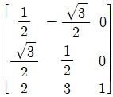
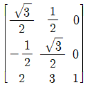
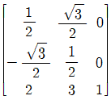
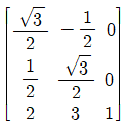
(정답률: 62%)
62. 곡면 모델링 시스템에 의해 만들어진 곡면을 불러들여 기존 모델의 평면을 바꾸기도 하는데 이러한 모델링 기능을 무엇이라 하는가?
- 필렛팅(filleting)
- 트위킹(tweaking)
- 리프팅(lifting)
- 스키닝(skinning)
(정답률: 47%)
63. 다음 중 CAD 입력장치가 아닌 것은?
- 키보드(key board)
- 트랙 볼(track ball)
- 플로터(plotter)
- 마우스(mouse)
(정답률: 78%)
64. 은선 혹은 은면 제거를 위한 방법이 아닌 것은?
- Cohen-Sutherland 알고리즘
- z-버퍼에 의한 방법
- 화가(painter's) 알고리즘
- back-face 제거 알고리즘
(정답률: 65%)
65. 제품 설계에서 CAD 시스템을 이용하는 데 대한 장점으로 거리가 먼 것은?
- 시간과 오류를 줄일 수 있다.
- 설계자의 능력을 배양할 수 있다.
- CAM 작업을 위한 기초 데이터를 생성할 수 있다.
- CAE 작업을 위한 기초 데이터를 생성할 수 있다.
(정답률: 67%)
66. 원점이 중심이고 장축이 x축이고 그 길이가 a, 단축이 y축이고 그 길이가 b인 타원을 표현하는 매개변수식은?
- x = (a-b)cosθ, y = (a-b)sinθ [0≤θ≤2π]
- x = acosθ, y = bsinθ [0≤θ≤2π]
- x = acoshθ, y = bsinhθ [0≤θ≤2π]
- x = (a-b)coshθ, y = (a-b)sinhθ [0≤θ≤2π]
(정답률: 72%)
67. 형상모델링에서 기본입체(primitive)의 조합을 이용하여 복잡한 형상을 표현하는 기능과 관계있는 기능은?
- 리프팅 작업(lifting operation)
- 스위핑 작업(sweeping operation)
- 불리안 작업(Boolean operation)
- 스키닝 작업(skinning operation)
(정답률: 64%)
68. 그림과 같이 4개의 경계곡선(C1~C4)을 선형 보간하여 얻어지는 곡면을 무엇이라 하는가?
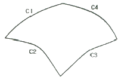
- Ruled 곡면
- Loft 곡면
- Sweep 곡면
- Coon's 곡면
(정답률: 46%)
69. 다음 설명 중 비다양체(nonmanifold) 상황에 해당하지 않는 것은?
- 꼭지점을 공유하는 두 개의 솔리드

- 공통 모서리를 갖는 두 개의 솔리드

- 솔리드 위의 한 점에서 뻗어나온 와이어 모서리

- 솔리드에서 작은 솔리드 2개를 뺀 형상

(정답률: 78%)
70. 컴퓨터그래픽에서 적용되는 전형적인 두 가지 투영방식인 원근투영방식과 평행투영방식에 관한 설명 중 틀린 것은?
- 시각점(viewpoint)은 물체 위의 한 점을 말한다.
- 스크린은 시각점과 관측위치 사이에 놓인다.
- 원근투영(perspective projection)에서 관심 대상 물체의 모든 점은 대개 관측위치로부터 시각점(viewpoint)에 이르는 선을 따라 위치하는 투영중심에 연결되고, 이 선들과 스크린의 교차점들이 투영되는 이미지를 만든다.
- 평행투영(parallel projection)에서 관측 위치와 시각점에 의해서 정의된 시각 방향으로 물체의 모든 점에서 평행하는 선들이 주사되며, 이 선들과 스크린의 교차점들이 이미지를 만든다.
(정답률: 35%)
71. 다음 전동장치 중 가장 정확한 속도비를 얻을 수 있는 것은?
- 평 벨트
- V 벨트
- 로프
- 체인
(정답률: 75%)
72. 베벨기어의 종류 중 두 축이 90°로 만나면서 두 기어의 크기와 속도가 서로 같은 것은?
- 크라운 기어
- 스파이럴 베벨 기어
- 마이터 기어
- 제롤 베벨 기어
(정답률: 50%)
73. 그림과 같이 작동하는 피스톤-크랭크 기구에서 피스톤의 가장 오른쪽 끝(C1)으로부터 이동거리 x를 구하는 식으로 옳은 것은? (단, 크랭크의 반지름은 r이며, 식에서 λ는 λ = 크랭크반지름/커넥팅로드 길이 이다.)
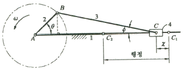
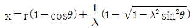
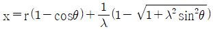
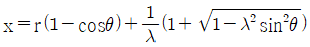
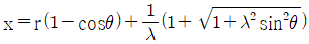
(정답률: 43%)
74. 그림과 같이 4링크 회전 기구에서 순간 중심의 수는 몇 개인가?
- 4
- 6
- 8
- 12
(정답률: 50%)
75. 그림과 같은 운동기에서 B요소가 AB위를 직선운동할 때 P점의 운동에 관한 설명으로 옳은 것은?
- 직선 AB에 직각 방향으로 직선 운동한다.
- A점을 중심으로 한 회전 운동을 한다.
- A점과 B점을 지나는 포물선을 따라 운동한다.
- A점과 B점을 지나는 쌍곡선을 따라 운동한다.
(정답률: 75%)
76. 캠과 종동절이 그리는 접촉면의 궤적에 따라 평면캠과 입체캠으로 구분하는데 다음 중 입체캠의 종류가 아닌 것은?
- 원통 캠
- 구면 캠
- 정면 캠
- 단면 캠
(정답률: 71%)
77. 평기어 장치에 비해 웜기어 장치의 특징이 아닌 것은?
- 큰 감속비를 얻을 수 있다.
- 소음과 진동이 크다.
- 치면의 미끄럼이 크고 효율이 낮다.
- 역회전 방지를 할 수 있다.
(정답률: 54%)
78. 지름이 3cm 인 회전체가 2000rpm 으로 회전할 때 원주 속도는 약 몇 m/s 인가?
- 1.14
- 3.14
- 4.14
- 6.14
(정답률: 80%)
79. 다음 중 간헐운동기구가 아닌 것은?
- 래칫(ratchet) 기구
- 로네-넬슨(Hrone-Nelson)의 종합기구
- 제네바(geneva) 기구
- 포이셀리에(Peaucellier) 기구
(정답률: 50%)
80. 그림과 같은 크랭크 기구에서 크랭크의 길이가 100mm이고, 300rpm 으로 회전하고 있다. 크랭크의 위치가 수평위치로부터 60°의 위치에 왔을 때 슬라이더(4번 부품)의 선속도는 약 몇 m/s 인가?
- 1.4
- 1.8
- 2.3
- 2.7
(정답률: 29%)
최대 전단력 = (단면적) x (전단탄성계수) x (보의 길이) / 2
= (45,000mm^2) x (80GPa) x (3m) / 2
= 108,000,000 N
= 108 kN
하지만 이 문제에서는 보기에 주어진 답이 "27 kN" 이므로, 이는 최대 전단력의 1/4 이다. 이는 보의 단면이 정사각형이 아니라 직사각형이기 때문에 발생하는 현상으로, 최대 전단력이 단면적의 중심에서 발생하지 않고, 보의 모서리 부근에서 발생하기 때문이다. 따라서 최대 전단력의 1/4 인 27 kN 이 답이 된다.